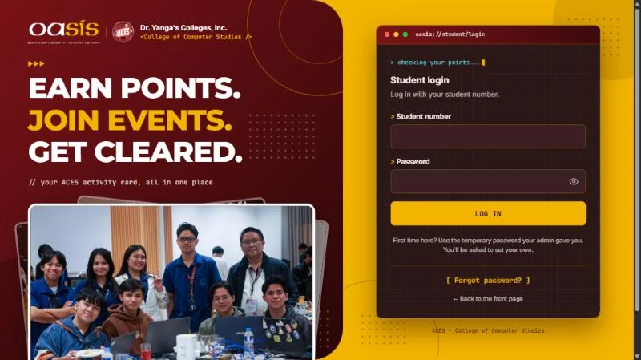
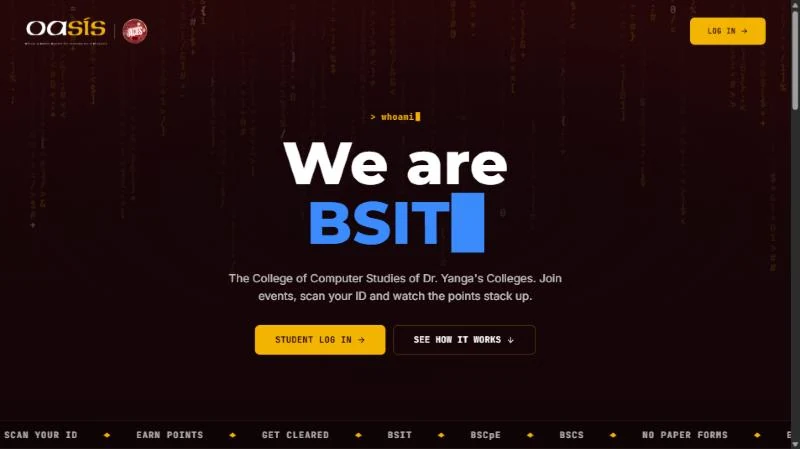
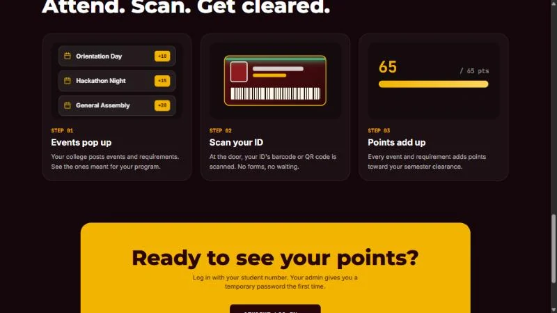

Work OASIS
Web system
OASIS
Attendance and clearance for a college of computer studies: students scan their ID at events, earn points and see if they are cleared.

Overview
OASIS (Officer & Admin System for Involvement & Students) is the attendance and clearance system for the College of Computer Studies at Dr. Yanga’s Colleges, run with the Association of Computer Enthusiast Students (ACES). It replaces paper forms and sign-in sheets: students scan their ID at an event, earn points for every event and requirement, and see how close they are to semester clearance.
It is three connected sites on one shared database. Students use the student site, officers manage everything from the admin console, and staff at the door use a scanner site. The student login is a split screen in maroon and yellow with a terminal-style form, and the rest of the system uses a dark cyberpunk-style interface with a falling-code background and a full-screen check-in kiosk.
Highlights
- Student site: log in with a student number, see your points, progress toward clearance, recent activity and a requirements checklist, with a points breakdown shown as a HUD with charts.
- Students also get events and notifications tabs, a profile with photo, bio, talent and hobbies, and a cyberpunk-styled ID card with a barcode, a QR code and a live clearance panel.
- Admin console: a dashboard with live counts and an activity feed, a student roster with ID cards, requirements and events with point values, and bulk import of students from Excel or CSV.
- Admins create student accounts in bulk with temporary passwords. Students must set their own password on first login, and a “forgot my password” request goes to the admin.
- Scanner site: staff pick an event that is open today and launch a full-screen kiosk. Scanning a barcode or QR code records attendance and shows the student their result.
- Scanning only works on the event’s own date, and events limited to one program (BSIT, BSCpE or BSCS) reject students from the others.
- A student is cleared when their points reach the total of the requirements and events that apply to their program.
- Access is enforced in the database rules: admins, scanners and students each get different permissions, and students can only edit their own profile.
More from this project

